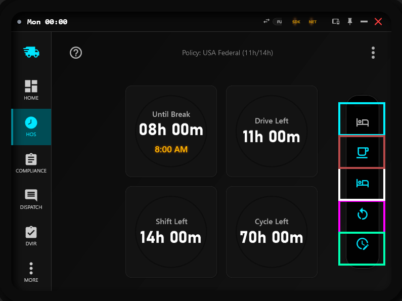
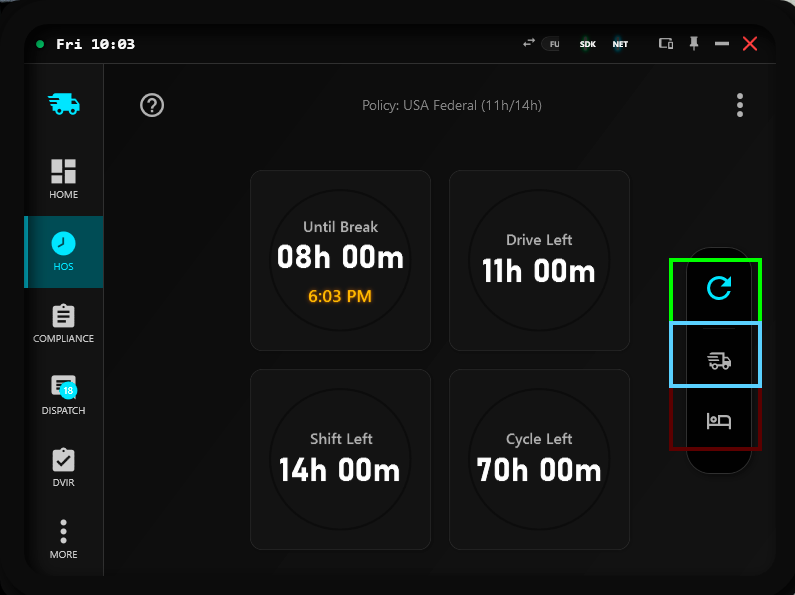
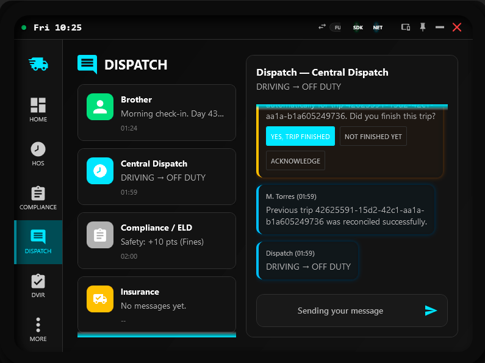
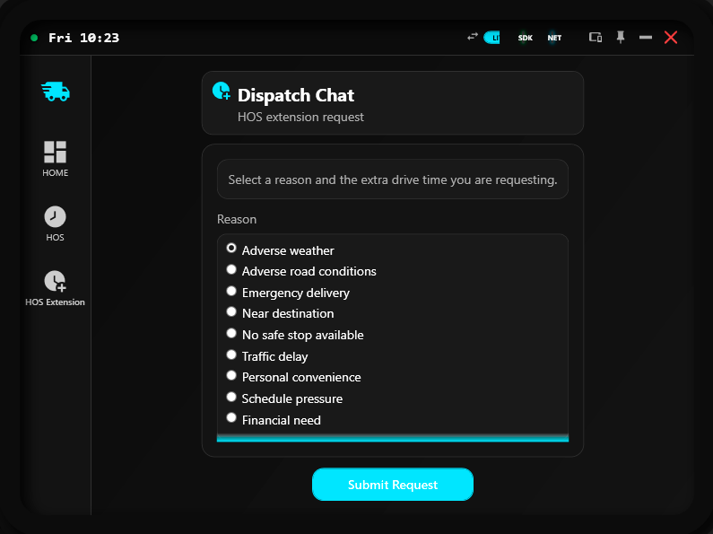

HOS Dashboard
Manage drive time, rest periods, and compliance status in real time.
Overview
This page explains how to read HOS limits, use rest controls safely, and avoid compliance violations in active operations.
The HOS screen is a core SimDuty workflow. Use this guide before extending routes or applying rest actions.
Read Drive Left, Shift Left, and Cycle Left together before route commitment
Use rest controls only in appropriate vehicle state (stopped vs moving)
Differentiate Yard Move from Off Duty to avoid wrong compliance assumptions
Plan breaks before urgency reaches critical countdown windows
Re-check HOS after every status transition (rest start, rest end, dispatch change)
Use Quick Reset only when operationally justified by your policy context
Policy model and baseline
SimDuty supports multiple HOS policies and applies timer behavior according to the active policy.
- Documentation baseline: this page uses USA Federal (11h/14h) as the primary example model.
- Operational recommendation: use
Autopolicy mode when switching between ATS and ETS2 so SimDuty can align policy by detected game. - Manual mode: use when your league/VTC requires one fixed policy regardless of game.
- USA examples are used for clarity; real limits can differ in CA, EU, BR, and Custom policies.
Policy reference table
Reference values below are operational summaries in hours/minutes.
- USA Federal: Drive 11h, Shift/Elapsed 14h, Break after 8h (30m), Rest 10h, Cycle 70h, Restart 34h.
- Canada South: Drive 13h, On-duty 14h, Elapsed 16h, no mandatory break timer, Rest 10h, Cycle 70h, Restart 36h.
- Europe: Drive 9h, Shift 13h, Break after 4.5h (45m), Rest 11h, Cycle 56h, Restart 45h.
- Brazil: Drive 10h, Shift 12h, Break after 5.5h (30m), Rest 11h, cycle/restart may be disabled by policy profile.
- Custom: starts from USA defaults and can be manually changed in settings.
Core timers explained
- Drive Left: remaining legal driving time before a required stop or violation state.
- Shift Left: remaining time in your duty-shift window for the current operational day.
- Cycle Left: remaining allowance in the multi-day cycle limit defined by policy.
- Drive Left controls immediate driving viability, while Shift Left and Cycle Left control broader legal envelope.
- A trip can look safe by Drive Left alone but still be constrained by Shift Left or Cycle Left.
- Always evaluate all three before accepting or extending a long route.
How timer logic works
- Drive Left: remaining drive allowance from policy max drive, including approved extension minutes when granted.
- Shift Left: remaining shift window using the strictest applicable policy envelope (elapsed vs on-duty model where applicable).
- Cycle Left: remaining multi-day capacity when cycle is enabled in the active policy.
- Break reset: once break qualifying time reaches policy minimum, break pressure resets.
- Rest reset: once required rest is completed, drive/shift counters reset for the next operational block.
- Restart reset: when restart duration is met and cycle is enabled, cycle usage resets.
Status transitions by app rules
These transitions follow SimDuty runtime logic, not only UI intent.
- Driving: status becomes
DRIVINGwhen the truck is moving above the app movement threshold. - On Duty: with engine on and no manual override, a stopped truck resolves to
ON DUTY; moving withYard Movealso resolves toON DUTY. - Off Duty: set it manually while stopped; in automatic flow with engine off, the app waits briefly before switching to off-duty.
- Yard Move: can only be enabled while stopped, then operates as a controlled low-speed maneuver mode.
- Manual Off Duty safety: if Off Duty is active and the vehicle starts moving, SimDuty turns it off automatically.
- Short idle behavior: after recent movement, the app can keep driving context briefly before settling into stopped on-duty behavior.
Interactive controls map
Use this map to understand what is available when the vehicle is stopped versus moving.


Off Duty
Enters off-duty context when the vehicle is stopped and manual control conditions are valid.
- Use for compliance-safe downtime and rest transitions.
- Expected effect: off-duty timers and rest progression can advance according to policy.
- If blocked, verify vehicle stopped state and manual status safety conditions.
Controls fallback reference:
- Stopped state order: 1) Off Duty, 2) Break (policy duration), 3) Rest (policy duration), 4) Reset (policy duration), 5) Custom.
- Moving state order: 1) Quick Reset, 2) Yard Move, 3) Off Duty.
- Quick Reset: enables reset behavior when a new quick job delivery starts.
- Policy note: examples use USA baseline labels, but Break/Rest/Reset durations follow the active policy.
- Yard Move speed: speed limit and auto-disable behavior are configurable in
Settings. - Yard Move: maneuver mode for low-speed yard operations, not a rest state.
- Off Duty: out-of-duty status for rest/off-work context, not yard maneuvering.
HOS Extension (Full and Lite)
HOS Extension is available in both editions, but entry flow differs.


- Select a reason for the extension request.
- Select requested extra time (30, 45, 60, 90, or 120 minutes).
- Submit request and wait for dispatch/compliance decision.
- If approved or partial, re-check Drive Left, Shift Left, and Cycle Left before continuing route.
HOS Extension rules
- Before sending, SimDuty checks whether requested extra drive time still fits your current shift envelope.
- If it does not fit, the request is refused immediately and you should plan rest first.
- When accepted for evaluation, outcomes are: Approved, Partial, or Denied.
- Emergency and adverse-condition reasons usually have stronger approval potential than convenience reasons.
- Near-destination and delay cases often receive partial time rather than full requested time.
- After approval or partial approval, always re-check Drive Left, Shift Left, and Cycle Left before continuing.
Practical examples:
- Example A: 32 miles to destination + near-destination reason + 45m request -> partial approval is common.
- Example B: emergency delivery + 120m request -> full approval is possible when context supports it.
- Example C: Drive Left 20m, Shift Left 50m, request 60m -> immediate refusal due to shift limit mismatch.
Daily management scenarios
Scenario 1 - Pre-dispatch long haul
- Check: Drive Left + Shift Left + Cycle Left with policy label visible.
- Action: if any timer is near critical, rest first and dispatch after reset.
- Result: lower violation probability during mid-route segments.
Scenario 2 - Urban delay under pressure
- Check: remaining drive vs destination distance and shift envelope.
- Action: request HOS Extension with accurate reason and minimal required duration.
- Result: compliant continuation when extension is approved/partial.
Scenario 3 - Yard operations at destination
- Check: whether operation goal is maneuvering or rest transition.
- Action: use
Yard Movefor maneuvering; useOff Dutyfor rest context. - Result: clearer HOS state and better compliance decisions.
- Extra check: if Yard Move behaves unexpectedly, review speed limit and auto-disable settings.
Advanced note
- Sleeper and Personal Conveyance exist in app logic and can affect status resolution.
- They are advanced operational states and are not the main controls in this HOS page workflow.
Operational workflow
- Before dispatch, validate Drive Left, Shift Left, and Cycle Left together.
- Confirm active policy and policy mode (Auto or Manual) match intended operation.
- During trip progression, watch for approaching thresholds and pre-plan safe stop points.
- When stopped, apply Off Duty, Break (policy duration), Rest (policy duration), Reset (policy duration), or Custom based on expected recovery target.
- Use Yard Move only for controlled low-speed maneuver operations.
- Use Off Duty for compliance rest context, not for active yard movement tasks.
- Resume movement only after verifying updated timer state is compliant for your next leg.
Path and reference
Main path: HOS tab
- Primary cards: Until Break, Drive Left, Shift Left, Cycle Left
- Policy scope: USA, BR, CA, EU, and Custom profiles supported
- Action cluster (stopped): Off Duty, Break (policy duration), Rest (policy duration), Reset (policy duration), Custom
- Moving-state cluster: Quick Reset, Yard Move, Off Duty
- More menu: Off Duty, policy-duration Break/Rest/Restart, and Custom dialog
- HOS Extension: Full via Dispatch panel, Lite via dedicated Extension flow
- Policy context shown in top region should match intended operation mode
Validation checkpoint
- Drive Left, Shift Left, and Cycle Left are reviewed before departure and route extension.
- USA baseline is used for examples, and policy label is confirmed for real operations.
- Auto policy mode behavior is understood when switching between ATS and ETS2.
- Rest action selected matches current vehicle state (stopped or moving context) and active policy duration.
- Yard Move and Off Duty are not treated as equivalent controls.
- 3-dots menu controls are understood and used intentionally.
- HOS Extension gate and decision outcomes are understood before requesting extra drive time.
- Break/rest is applied before any critical timer reaches violation state.
- After rest transitions, HOS values are re-validated before movement resumes.
- Policy shown on HOS screen matches expected compliance mode.
Quick support
- If timers look frozen, verify SDK/NET status and enter active driving context briefly.
- If a rest button seems unavailable, verify stopped-state requirements and control context.
- If menu actions seem missing, open the 3-dots menu and verify current status visibility conditions.
- If HOS values look inconsistent after mode changes, save settings, restart SimDuty, and re-check policy status.
- If Drive Left appears fine but trip still feels risky, check Shift Left and Cycle Left constraints.
- If HOS Extension is refused immediately, compare requested minutes against current Shift Left envelope.
- If Off Duty disables unexpectedly, verify movement speed and automatic safety behavior.
- If Yard Move keeps disabling or warning frequently, tune Yard Move speed limit and auto-disable settings in
Settings. - If confusion persists, capture HOS screen + policy label + active controls and share with support.